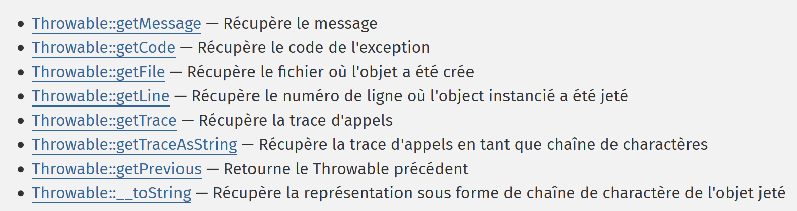
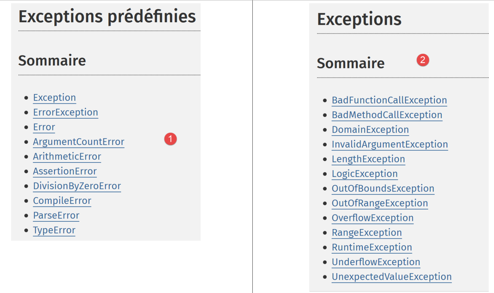

7. Exceções e erros
Quando um método de classe encontra um erro irrecuperável (ficheiro não existe, base de dados não conectada, ligação de rede interrompida), não exibe um erro na consola (ficheiro, base de dados), mas lança uma exceção. Todas as exceções estendem a classe [\Exception]. Além das exceções, as operações internas do PHP também geram erros cuja classe base é a classe [\Error]. Ambas as classes implementam a interface [\Throwable] do PHP.
7.1. A estrutura do diretório de scripts

7.2. A interface [\Throwable]
A interface [\Throwable] é a seguinte:

A função dos métodos da interface é a seguinte:

7.3. Exceções predefinidas no PHP 7
O PHP 7 define várias classes de exceção:

- em [1], as exceções predefinidas no PHP;
- em [2], as exceções da SPL (Standard PHP Library) no PHP 7. A SPL é uma coleção de classes e interfaces concebida para resolver problemas frequentemente encontrados pelos programadores.
7.4. Erros predefinidos no PHP 7
O PHP 7 define várias classes de erro:

A classe [\Error] é a classe pai de todos os erros predefinidos no PHP. A classe [ErrorException] permite encapsular uma instância da classe [\Error] dentro de uma instância da classe [\Exception]. Isto permite um tratamento de erros padronizado, lidando apenas com exceções.
7.5. Exemplo 1
O primeiro exemplo [exceptions-01.php] demonstra tanto erros PHP como uma exceção:
<?php
// display all errors
ini_set("error_reporting", E_ALL);
ini_set("display_errors", "on");
// code --------
$var=[];
// unknown key
print $var["abcd"];
// division by zero
$var=7/0;
var_dump($var);
// fixed terminal board
$array = new \SplFixedArray(5);
$array[1] = 2;
$array[4] = "foo";
// index outside the limits
$array[5]=8;
Comentários
- Linha 4: Dizemos ao PHP para relatar todos os erros. O segundo parâmetro é o nível de erro solicitado:


- linha 5: solicitamos que os erros sejam exibidos na consola;
- linha 9: acedemos a um elemento inexistente da matriz [$var];
- linha 11: realizamos uma divisão por zero;
- linha 14: criamos uma instância da classe [SplFixedArray]. Esta classe permite-nos criar uma matriz com limites fixos e índices inteiros;
- linha 18: acedemos a um elemento inexistente da matriz;
Resultados
Comentários
- Linha 1 dos resultados: O acesso a uma chave de matriz inexistente causa um erro PHP de nível [E_NOTICE]. Isto não interrompe a execução do script;
- Linha 3 dos resultados: Dividir um número por zero causa um erro PHP de nível [E_WARNING]. Isto não interrompe a execução do script;
- Linhas 6–9 dos resultados: aceder a um índice inexistente de uma matriz [SplFixedArray] causa uma [RuntimeException] e interrompe a execução do script;
7.6. Tratamento de exceções
O script [exceptions-02.php] demonstra como tratar exceções:
<?php
// all errors are displayed
ini_set("error_reporting", E_ALL);
ini_set("display_errors", "on");
// surround the code with a try / catch
try {
$var = [];
// unknown key
print $var["abcd"];
// division by zero
$var = 7 / 0;
var_dump($var);
// fixed terminal board
$array = new \SplFixedArray(5);
$array[1] = 2;
$array[4] = "foo";
// index outside the limits
$array[5] = 8;
// check
print "ce message ne sera pas affiché\n";
} catch (\Throwable $ex) {
// \Throwable is the interface implemented by most errors and exceptions
// exception is displayed
print "erreur, message : " . $ex->getMessage() . ", type : " . get_class($ex) . "\n";
}
Comentários
- Este script é o mesmo apresentado no parágrafo anterior. No entanto, agora envolvemos o código nas linhas 8–19 — que poderia causar erros — num bloco try/catch: se o código nas linhas 8–21 causar (lançar) uma exceção ou erro, este será tratado pela cláusula catch nas linhas 22–26;
- Linha 22: O parâmetro da cláusula [catch] é o tipo de exceção ou erro a ser tratado. Ao especificar o tipo como [\Throwable] — que é uma interface — indicamos que queremos tratar qualquer instância de classe que implemente a interface [\Throwable]. Uma vez que todas as classes de erro e exceção implementam esta interface, a cláusula [catch] aqui trata qualquer erro ou exceção encapsulado numa classe;
- linha 19: a instrução que desencadeia o erro e lança a exceção. Assim que ocorre uma exceção, o controlo passa para a cláusula [catch]. O código a seguir à linha 19 não será, portanto, executado;
Resultados
Comentários sobre os resultados
- linhas 1 e 3: vemos erros de nível [E_NOTICE] e [E_WARNING]. Estes erros não são exceções e, por isso, não são tratados pela cláusula [catch];
- linha 5: temos a mensagem de erro escrita na cláusula [catch]. Ocorreu, portanto, uma exceção derivada de [\Exception] ou um erro derivado de [\Error]. Aqui vemos que se trata da classe [\RuntimeException];
7.7. Parâmetros da cláusula [catch]
Vamos examinar o seguinte script [exceptions-03.php]:
<?php
// all errors are displayed
ini_set("error_reporting", E_ALL);
ini_set("display_errors", "on");
// a fixed terminal board
$array = new \SplFixedArray(5);
try {
// index outside the limits
$array[5] = 8;
} catch (\Throwable $ex) {
// error message display
print "Erreur 1 : " . $ex->getMessage() . "\n";
}
try {
// index outside the limits
$array[5] = 8;
} catch (\Exception $ex) {
// error message display
print "Erreur 2 : " . $ex->getMessage() . "\n";
}
try {
// index outside the limits
$array[5] = 8;
} catch (\RuntimeException $ex) {
// error message display
print "Erreur 3 : " . $ex->getMessage() . "\n";
}
try {
// division by 0
intdiv(5, 0);
} catch (\Throwable $ex) {
// error message display
print "Erreur 4 : " . $ex->getMessage() . "\n";
}
try {
// division by 0
intdiv(5, 0);
} catch (\DivisionByzeroError $ex) {
// error message display
print "Erreur 5 : " . $ex->getMessage() . "\n";
}
try {
// division by 0
intdiv(5, 0);
} catch (\Error $ex) {
// error message display
print "Erreur 6 : " . $ex->getMessage() . "\n";
}
try {
// division by 0
intdiv(5, 0);
} catch (\Exception $ex) {
// error message display
print "Erreur 6 : " . $ex->getMessage() . "\n";
}
Comentários
- linhas 8–31: 3 formas diferentes de tratar a exceção gerada pela utilização de um índice incorreto com a classe [\SplFixedArray]. Vimos que este erro gera uma [RuntimeException];
- linha 12: trata um erro do tipo [\Throwable]. Isto é válido, uma vez que o tipo [RuntimeException] deriva do tipo [\Exception], que implementa a interface [\Throwable];
- linha 20: trata um erro do tipo [\Exception]. Isto é válido, uma vez que o tipo [RuntimeException] deriva do tipo [\Exception];
- linha 28: trata um erro do tipo [\RuntimeException]. Este é o método preferido, uma vez que é o tipo exato da exceção gerada;
- linhas 32–62: 4 formas diferentes de tratar a exceção gerada pela função [intdiv] ao passar-lhe um divisor igual a 0. A função [intdiv(int $dividend, int $divisor): int] realiza a divisão inteira $dividend / $divisor. Quando o divisor é zero, é lançada a exceção [\DivisionByzeroError];
- linha 35: capturamos qualquer erro que implemente a interface [\Throwable]. Isto é válido;
- linha 43: capturamos o tipo exato do erro: este é o método preferido;
- linha 51: o tipo [\Error] é capturado. Isto é válido, uma vez que a classe [DivisionByzeroError] estende a classe [Error];
- linha 59: o tipo [\Exception] é interceptado. Isto é inválido porque a classe [DivisionByzeroError] não tem qualquer ligação com a classe [\Exception];
Resultados
7.8. Cláusula [finally]
A estrutura try/catch pode ter um terceiro elemento e tornar-se uma estrutura try/catch/finally. O código na cláusula [finally] é executado nos dois casos seguintes:
- a cláusula [try] não lança uma exceção. É então executada na íntegra, e a execução do código prossegue para a cláusula [finally], que é executada na íntegra;
- a cláusula [try] lança uma exceção. É então executada até à instrução que lança a exceção. A execução prossegue então para a cláusula [catch], que é executada na íntegra. A execução prossegue então para a cláusula [finally], que é executada na íntegra;
Por fim, o código no bloco [finally] é sempre executado. Este cenário é útil no seguinte caso:
- no bloco [try], o código adquiriu recursos (ficheiros, bases de dados, ligações de rede, filas). Estes recursos são geralmente intensivos em memória. Devem, portanto, ser libertados (mais frequentemente referidos como «fechados») o mais rapidamente possível;
- Se os recursos foram adquiridos no bloco [try], a sua libertação deve ser colocada no bloco [finally]. Isto garante que, em todos os casos (ocorra ou não um erro), os recursos adquiridos sejam devolvidos ao sistema;
O seguinte script [examples/exceptions/exceptions-04.php] demonstra como a cláusula [finally] funciona em várias situações:
<?php
// or create an exception instance
$e = new \Exception("Erreur…");
var_dump($e);
// first test
try {
print "Premier test\n";
throw $e;
} catch (\Exception $ex1) {
print $ex1->getMessage() . "\n";
} finally {
print "Terminé\n";
}
// second test
try {
print "Second test\n";
} catch (\Exception $ex1) {
print $ex1->getMessage() . "\n";
} finally {
print "Terminé\n";
}
// third test
try {
print "Troisième test\n";
return;
} catch (\Exception $ex1) {
print $ex1->getMessage() . "\n";
} finally {
print "Terminé\n";
}
Comentários no código
- linha 4: $e é uma instância da classe predefinida [\Exception]. Iremos lançá-la em vários locais;
- linhas 8–15: a exceção $e é lançada no bloco [try] (linha 10);
- linha 11: a exceção [\Exception] é capturada e a sua mensagem de erro é escrita na consola;
- linhas 13–15: a cláusula [finally] imprime uma mensagem. Com base no que foi mencionado anteriormente, esta mensagem deve ser sempre impressa, independentemente de haver ou não um erro no bloco [try];
- linhas 18–24: não há erro no [try]. Também devemos entrar no bloco [finally] aqui;
- linhas 27–34: existe uma instrução [return] no bloco try e não há erro. Poder-se-ia perguntar, então, se entraremos na cláusula [finally]. A execução mostra que sim;
Resultados
Vamos examinar outro caso [exceptions-05.php]:
<?php
// fourth test
try {
print "Quatrième test\n";
exit;
} finally {
print "Terminé\n";
}
Comentários
- linha 6: a instrução [exit] interrompe imediatamente a execução do script: a cláusula [finally] não é executada;
- linhas 4–9: um exemplo de try / catch / finally sem uma cláusula [catch]. Isto é possível;
Resultados
7.9. Criar as suas próprias classes de exceção
Num projeto de dimensão considerável, é útil diferenciar os vários erros, encapsulando-os em diferentes classes de exceção. No script anterior, vimos que qualquer exceção podia ser capturada por uma cláusula [catch (\Throwable]. Isto é recomendado se não tiver ideia de qual é o erro capturado e se o tratamento for o mesmo para todos os erros. Por vezes, é esse o caso, mas muitas vezes é necessário adaptar o tratamento ao tipo exato de erro. Deve, então, distinguir entre os erros.
Vamos examinar o seguinte script [exceptions-06.php]:
<?php
// we define our own family of exceptions
class Exception1 extends \RuntimeException {
}
class Exception2 extends \RuntimeException {
}
// or use our exceptions
$e1 = new Exception1("Erreur1…");
var_dump($e1);
$e2 = new Exception2("Erreur2…");
var_dump($e2);
// first test
print ("premier test\n");
try {
// throw an Exception1 type
throw $e1;
} catch (Exception1 $ex1) {
print "Exception 1" . "\n";
print $ex1->getMessage() . "\n";
} catch (Exception2 $ex2) {
print "Exception 2" . "\n";
print $ex2->getMessage() . "\n";
}
// second test
print ("second test\n");
try {
// throw an Exception2 type
throw $e2;
} catch (Exception1 $ex1) {
print "Exception 1" . "\n";
print $ex1->getMessage() . "\n";
} catch (Exception2 $ex2) {
print "Exception 2" . "\n";
print $ex2->getMessage() . "\n";
}
// third test
print ("troisième test\n");
try {
// throw an Exception1 type
throw $e1;
} catch (Exception1 | Exception2 $ex) {
print "Exception 1 ou 2" . "\n";
print $ex->getMessage() . "\n";
}
// fourth test
print ("quatrième test\n");
try {
// throw an Exception2 type
throw $e2;
} catch (Exception1 | Exception2 $ex) {
print "Exception 1 ou 2" . "\n";
print $ex->getMessage() . "\n";
}
Comentários
- linhas 4–10: definimos duas classes, [Exception1] e [Exception2], ambas derivadas da classe predefinida [\RuntimeException]. O corpo destas classes está vazio. Por outras palavras, utilizamo-las apenas para definir os seus tipos: é por terem tip es que poderemos distinguir entre estas duas exceções nas cláusulas [catch];
- linhas 13–16: definimos duas variáveis, $e1 e $e2, com os tipos [Exception1] e [Exception2], respetivamente;
- linhas 20–29: temos uma estrutura try/catch/catch. Isto permite-nos tratar diferentes tipos de exceções com diferentes cláusulas [catch];
- linha 23: captura exceções do tipo [Exception1];
- linha 26: captura exceções do tipo [Exception2];
- linha 49: captura exceções do tipo [Exception1] ou (|) [Exception2];
Resultados
Comentários sobre os resultados
- linhas 1–17: o «conteúdo» de uma exceção:
- linhas 2–3: a mensagem de erro;
- linhas 6–7: o código de erro;
- linhas 8–9: o nome do ficheiro em que a exceção ocorreu;
- linhas 10–11: a linha onde a exceção ocorreu;
- linhas 15–16: a exceção anterior. Uma exceção pode encapsular outra exceção, definindo assim uma pilha de exceções. O atributo [previous] permite-lhe aceder a esta pilha;
7.10. Re-lançar uma exceção
Uma exceção pode ser lançada várias vezes, como mostrado no seguinte script [exceptions-07.php]:
<?php
try {
try {
// throw an exception
throw new \Exception("test");
} catch (\Exception $ex) {
// the intercepted exception is re-launched
throw $ex;
} finally {
// we'll make it to the finally
print "finally 1\n";
}
} catch (\Exception $ex2) {
// the initial exception is recovered
print $ex2->getMessage() . " dans try / catch / finally externe\n";
} finally {
// we'll make it to the finally
print "finally 2\n";
}
Comentários
- linha 6: lançamos uma exceção;
- linha 7: capturamo-la;
- linha 9: lançamo-la novamente. Em seguida, ela passa pelo bloco try/catch/finally no nível superior;
- linha 14: é capturada novamente;
- linhas 10–12: a execução mostra que, mesmo após o [throw] na linha 9, o controlo flui efetivamente para a cláusula [finally] do bloco try/catch/finally;
Resultados
7.11. Trabalhar com uma pilha de exceções
Uma exceção pode encapsular outra exceção, que por sua vez pode encapsular outra, formando, em última instância, uma pilha de exceções. Aqui está um exemplo [exceptions-08.php]:
Comentários
- linhas 4–14: definem três classes de exceção derivadas da exceção predefinida [RuntimeException];
- linha 17: uma instância da classe [Exception3] é encapsulada dentro de uma instância da classe [Exception2], que por sua vez é encapsulada dentro de uma instância da classe [Exception1]. O construtor utilizado aqui é o construtor da classe [Exception]:

O terceiro parâmetro do construtor permite que uma exceção seja encapsulada. Isto pode ser útil no seguinte cenário:
- definimos um método M que pode gerar uma exceção do tipo [Exception1] e apenas deste tipo por motivos de compatibilidade, por exemplo, com uma interface;
- no entanto, outros tipos de exceções podem ocorrer dentro do método M. Para propagar um erro de volta para o código que chama o método M, encapsularemos então essas exceções no tipo [Exception1], que lançaremos. Isto garante que a informação contida na exceção encapsulada — que foi a causa original do erro — não se perca;
- As linhas 20–27 mostram como gerir a pilha de exceções aninhadas dentro de uma exceção;
Resultados
object(Exception1)#1 (7) {
["message":protected]=>
string(11) "Erreur 1…"
["string":"Exception":private]=>
string(0) ""
["code":protected]=>
int(1)
["file":protected]=>
string(76) "C:\Data\st-2019\dev\php7\php5-exemples\exemples\exceptions\exceptions-08.php"
["line":protected]=>
int(17)
["trace":"Exception":private]=>
array(0) {
}
["previous":"Exception":private]=>
object(Exception2)#2 (7) {
["message":protected]=>
string(11) "Erreur 2…"
["string":"Exception":private]=>
string(0) ""
["code":protected]=>
int(2)
["file":protected]=>
string(76) "C:\Data\st-2019\dev\php7\php5-exemples\exemples\exceptions\exceptions-08.php"
["line":protected]=>
int(17)
["trace":"Exception":private]=>
array(0) {
}
["previous":"Exception":private]=>
object(Exception3)#3 (7) {
["message":protected]=>
string(11) "Erreur 3…"
["string":"Exception":private]=>
string(0) ""
["code":protected]=>
int(0)
["file":protected]=>
string(76) "C:\Data\st-2019\dev\php7\php5-exemples\exemples\exceptions\exceptions-08.php"
["line":protected]=>
int(17)
["trace":"Exception":private]=>
array(0) {
}
["previous":"Exception":private]=>
NULL
}
}
}
Erreur 1…
Erreur 2…
Erreur 3…